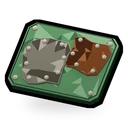

Scrap and Sparks
Scrap and Sparks is a quest line given by Brann. Brann turns your spare gear into Scrap, and Scrap into a roll at the Forge.
How it opens
- Reach level 40.
Steps
| # | Quest | Level | Objective | Rewards |
|---|---|---|---|---|
| 1 | Melting Pot | 40 | Break down 30 pieces of gear at the Smelter. |  Adamantite Ingot ×6 Adamantite Ingot ×6 Riveted Plate ×2 |
| 2 | Taking Out the Trash | 42 | Beat the Garbage Man's third wave in his dump. |  Scrap ×20 Scrap ×20 Ironbark Tonic ×2 Ironbark Tonic ×2 |
| 3 | First Spark | 45 | Roll a piece of gear at the Scrap Forge. | Scrap ×40 Gold Coin ×2,000 Gold Coin ×2,000 |